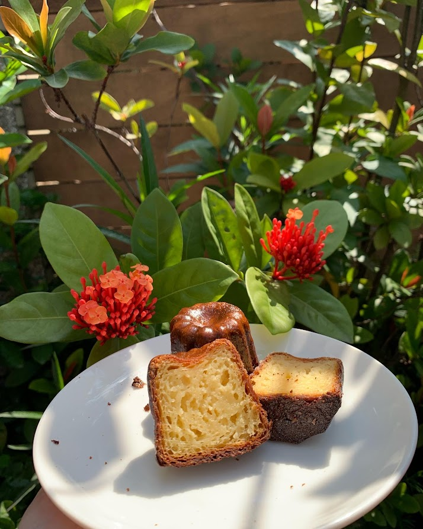

從蛋白打發到麵糊結構，
理解甜點背後的原理。
以戚風蛋糕為起點，整理製程中影響組織、膨脹與穩定度的觀察方向。
文章籌備中Baking · Storytelling · AI Visual
你好，我是鄭羽玲。從烘焙工藝出發，將對風味與細節的敏銳，延伸到短影音敘事與 AI 視覺創作。讓美味有故事，也讓每一份用心被看見。
探索我的創作
01 / Selected works
烘焙、影像與數位美感，
是我表達想法的三種語言。
← 左右滑動探索，點選可閱讀作品說明。部分版位呈現同一作品的細節與情境；短影音目前為企劃素材，影片待補。
02 / A little about me
從烘焙色澤，到切面的細節。
我是鄭羽玲，
一位在烘焙與數位創作之間，
持續探索的創作者。
畢業於國立高雄餐旅大學烘焙管理學系，擁有三年烘焙產業實務經驗。曾在 JR 東日本大飯店台北點心房累積歷練，學習把技術、品質與細節，落實在每一次製作裡。
烘焙讓我學會耐心，也培養了對質地、色彩與節奏的觀察力。這份細膩，逐漸成為我投入短影音企劃、內容剪輯與 AI 美感圖像創作的起點。
我相信，作品的價值來自技術，也來自它如何被理解。希望結合實體工藝與數位敘事，陪伴餐飲品牌與創作者，找到有溫度的表達方式。
在飯店點心房環境中累積甜點製作經驗，重視製作流程、盤飾與成品品質。
將美食專業延伸到影像腳本、剪輯與視覺發想，探索味覺與數位美感的結合。
03 / What I bring
從產品本身，到它被看見的方式，
以工藝為底，為內容加入美感與故事。
將實務經驗與對風味的理解，應用於甜點內容、產品發想與製作細節。
把製作過程中的細節轉化為觀眾能感受的畫面，建立自然、有節奏的敘事。
結合生成式工具與美感判斷，發想品牌情境、商品氛圍與一致的視覺語言。
分享需求→討論方向與範圍→確認時程與合作內容→開始創作
04 / Notes & curiosities
正在整理的學習與觀察。
從烘焙科學，到數位創作的日常練習。
以戚風蛋糕為起點，整理製程中影響組織、膨脹與穩定度的觀察方向。
文章籌備中從開場畫面、拍攝分鏡到聲音節奏，探索讓製作過程更吸引人的方式。
文章籌備中記錄 AI 圖像創作中的風格思考，讓視覺素材與品牌想傳達的感受相互呼應。
文章籌備中05 / Let's create together
有想分享的品牌故事，或正在發想的合作計畫？歡迎從一封信開始，聊聊你的需求與期待。
yuling.cheng.baking@gmail.com ↗INSTAGRAM@littlemolly_eat ↗台灣・台北 / 高雄
可討論遠端與線上合作